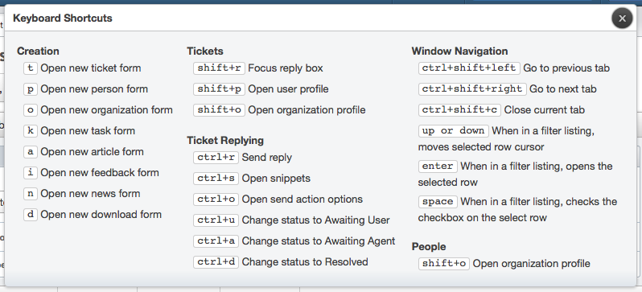

New keyboard shortcuts are available on the ticket tab to allow you to perform common tasks even faster.
alt+r: Sends your reply
alt+s: Opens the snippets directory
alt+o: Opens the reply actions menu
alt+u: Sets the reply action to Awaiting User
alt+a: Sets the reply action to Awaiting Agent
alt+d: Sets the reply action to Resolved
Note: For Mac users, use ctrl instead of alt.

View all of the keyboard shortcuts by clicking the keyboard icon in the top-right of the window